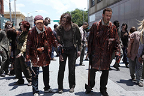
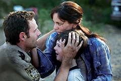
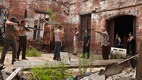
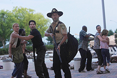
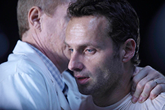

Episodes
1.Days Gone Bye
After waking up from a coma in an abandoned Atlanta hospital, Officer Rick Grimes embarks on a survivalist adventure in a post-zombie apocalypse. Morgan and Duane, whom he meets along the way, help teach Rick the new rules for survival.
2.Guts
Rick unknowingly causes a group of survivors to be trapped by walkers. The group dynamic devolves from accusations to violence, as Rick must confront an enemy far more dangerous than the undead.
3.Tell It To The Frogs
Rick makes a decision to go back to Atlanta to retrieve the bag of guns and save a man's life, whilst Lori and Shane must deal with the surprising return of someone they thought was dead.
4.Vatos
Another group of survivors threatens Rick, Daryl, T-Dog and Glenn, sending Rick's mission to Atlanta awry; Jim becomes unhinged back at camp.
5.Wildfire
Rick leads the group to the CDC hoping to cure an infected Jim, who must make a terrible life-and-death decision.
6.TS-19
Rick and the group are allowed into the CDC by a strange doctor, but all is not what it seems in their new-found haven.